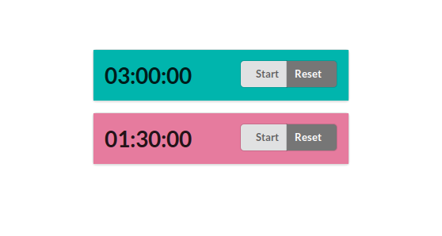

Recently I’ve had a bit of a problem maintaining motivation when working on one of my projects. To overcome the stopping force of procrastination I decided to try a new strategy: setup a 4.5 hours work sessions where 1.5 hours is a break budget and the other 3 hours are an actual honest to god work. I needed a way to keep track of a work session time and since I wasn’t able to find anything useful on the internet (I haven’t searched very hard to be honest) I decided to write one myself (as you do; or rather as happens to people who have been exposed to the harmful radiation of computer processors for far too many years). Coincidentally such an application was small and neat enough to use as an example for the CEF3 bindings I have recently finished.
So yeah, in this post I’m going to describe building such an application.
Lets start with a specification: Generally speaking it’s going to be very minimalistic and simple; just a list of timers that you can start/stop and reset. Keeping with the Unix tradition of unhelpfully short names we’ll name our little program tmr. Additionally we’ll add an option to specify different configuration of timers through the command line arguments using optparse-applicative.
Here is how it will look like:

Now before we start let me lay down my assumptions about the target audience of this post: I assume knowledge of Haskell, so I will not explain the basics. I will be using optparse-applicative and threepenny-gui but I will not go in depth explaining everything about these libraries or things like FRP, etc. I will, instead, just give a high-level overview of what I’m doing as there are already much better tutorials and guides for these libraries on the web. This is, in contrast, more of a general writeup of creating a small, simple, desktop application in Haskell from start to finish.
One additional thing that I need to add before we proceed: I will not be going through every single line of code in this post only the essential/interesting bits. If there is something missing that you’d like to see you can look it up in the source repo on github. Specifically this post is based on revision 3111066.
OK, so with that out of the way let us get on with it.
We start with creating a record of options that we will parse from command line arguments. These being a port number for threepenny server and list of timers with time and color each.
newtype Timer = Timer NominalDiffTime
data TimerSetup = TimerSetup
{ timerTime :: Timer
, timerColor :: Color
}
data Options = Options
{ optionPort :: Int
, optionTimers :: [TimerSetup]
}Next lets create a parser. optparse-applicative makes it straightforward to such an extent that it’s hard to really write anything useful here without making it sound like I’m just quoting the documentation.
optParser :: Parser Options
optParser = Options
<$> optPort
<*> optTimerList
where
optPort = option auto $ mconcat
[ short 'p'
, long "port"
, showDefault
, value 8099
, metavar "PORT"
, help "Server port"
]As I said this part is pretty much self-explanatory. We declare everything we need, short and long names of parameters etc. for each individual field and build the resulting record by applicatively composing the sub-parsers. Lets focus on parsing the timers:
optTimerList = parseTimers <$> many optTimer
optTimer = strOption $ mconcat
[ short 't'
, long "timer"
, metavar "TIME(;COLOR)"
, helpDoc (Just timerHelp) ]We handle this by expecting list (many) of string options and then passing result of that to a parseTimers function that will parse our more specific format. Alternatively we could use the option function with a dedicated reader (i.e. option (eitherReader parseTimer)) but this way we’ll be able to handle defaulting of colors from a palette a little bit easier.
parseTimers :: [String] -> [TimerSetup]
parseTimers = setDefault . catMaybes . zipWith parseSetup palette
where
setDefault [] =
[ parseSetupUnsafe "3:00:00;#00b5ad"
, parseSetupUnsafe "1:30:00;#e67b9e" ]
setDefault as = as
parseSetup :: Color -> String -> Maybe TimerSetup
parseSetup defaultColor setup = case splitOn ";" setup of
[time, color] -> TimerSetup <$> parseTime time <*> parseColor color
[time] -> TimerSetup <$> parseTime time <*> pure defaultColor
_ -> NothingFinally we parse each format string defaulting the colors where it’s necessary to ones in a palette (which is simply an infinite cycle of predefined colors).
Note: erroneous format strings for timers are silently ignored and in the case where there are no timers specified we get the default two described in the prologue, which can cause a surprising situation for an unsuspecting user. I should probably fix that but I couldn’t really be bothered.
getOptions :: IO Options
getOptions = execParser optionsParserInfo
optionsParserInfo :: ParserInfo Options
optionsParserInfo = info (optParser <**> helper) $ mconcat
[ fullDesc, progDesc description
, footerDoc $ Just explanation ]Lastly we create a ParserInfo which handles all of the help messaging and pack it up into a nice and handy getOptions function that executes the parser. Lets test what we’ve written so far by displaying the help message: stylistic
> tmr --help
Usage: tmr [-p|--port PORT] [-t|--timer TIME(;COLOR)]
Starts the timer board with specified timers
Available options:
-p,--port PORT Server port (default: 8099)
-t,--timer TIME(;COLOR) Timer startup string of format hh:mm:ss and
optional color name or hex color code, ie. #0ba
For example:
--timer 10:03:00 -t 0:5:0;red
--timer 00:03:00;#e67b9e
-h,--help Show this help text
When run without any timers specified the default will be:
tmr --timer 3:00:00;#00b5ad
--timer 1:30:00;#e67b9eLet us start with creating the timer widget as that’s the central part of tmr.
setupTimer :: Event Tick -> TimerSetup -> UI Element
setupTimer tickEvent (TimerSetup time color) = do
buttonStart <- View.buttonStart
buttonReset <- View.buttonReset
buttonGroup <- View.buttonGroup [ buttonStart, buttonReset ]
displayText <- View.displayText ( showTimer time )
display <- View.display displayText
content <- View.content (toPct color 100) [ display, buttonGroup ]
segment <- View.segment contentThe function takes two arguments: a stream of timer tick events, and our configuration record TimerSetup with a time to measure and a color of the timer. We create a stop/start button and a reset button and put all of the layout in place. As you can see I have elected to banish all of the display particularities into the View module as to not muddy the readability of the logic. As that module is not particularly interesting (it is basically a few named html elements with selected number of semantic-ui classes) I will not be quoting it here. You can check the details in the source repo.
eActive <- accumE False $ unionWith const
(not <$ UI.click buttonStart)
(const False <$ UI.click buttonReset)
onEvent eActive $ \case
True -> pure buttonStart # set text "Stop"
False -> pure buttonStart # set text "Start"We collect start/stop and reset buttons click events with a left-biased merge (unionWith const) we assume that user cannot really click both buttons at once so bias doesn’t really matter. Next we accumulate the events into the active state event and change the button label based on that state.
bActive <- stepper False eActive
eTimer <- accumE time $ unionWith const
(const time <$ UI.click buttonReset)
(updateTimer <$> whenE bActive tickEvent)
onEvent eTimer $ \timerState -> do
pure displayText # set text (showTimer timerState)
let pct = toPct color $ calcPct time timerState
pure content # set style pct
return segmentSimilarly we collect the reset and timer tick events and display the timer text and gradient. Finally we return the segment element that is the root of the widget.
So we have created the options parsing module and the central Timer widget, now let’s put it all together.
main :: IO ()
main = handleSubProcess $ do
opts <- getOptions
startServer opts
startBrowserUrl $ "http://127.0.0.1:" ++ show (optionPort opts)The getOptions function we are familiar with already and startServer is where we setup the threepenny server and we will get to that soon enough. For now let me just explain the other things that are going on here;
Since cef3-raw is a one-to-one mapping to the cef3 capi which is quite low level and not very straightforward I have created a cef3-simple package that will contain some higher level implementation for some common tasks. handleSubProcess and startBrowserUrl are two of them. Because cef3 is build with this multi-process design, we have to take care of that and this is what handleSubProcess does. It recognizes cef3 subprocesses and deals with them. Finally startBrowserUrl does what it says on the label; starts the browser window and loads the specified url which in this case is localhost on the port selected in options.
startServer :: Options -> IO ()
startServer opts = do
ep <- dropFileName <$> getExecutablePath
let config = defaultConfig
{ jsPort = Just $ optionPort opts
, jsStatic = Just $ ep ++ "/static" }
tickEvent <- newTickEvent
void $ forkIO $ startGUI config $ setup tickEvent (optionTimers opts)
setup :: Event Tick -> [TimerSetup] -> Window -> UI ()
setup tickEvent timerSetups win = do
UI.addStyleSheet win "semantic.min.css"
timers <- mapM (setupTimer tickEvent) timerSetups
void $ getBody win #+ [ View.centerGrid timers ]We add a style sheet, create the timers, attach them to the body, and that’s it.
Note: there is a bit of subtlety here; we fork starting the server and later on we will immediately load the page in cef. This could potentially explode if the cef starts before the server. I will have to investigate if that could be the case, but for now be wary of this.
If you are developing in Haskell and do not use nix you are doing it wrong - I mean you should use it in general, I’m writing this currently from a NixOS machine and it is a blast - but especially for Haskell the support there is magical. I still remember times when I dreaded installing bigger packages like lens out of fear of multi hour build times that could possibly break half way through. With nix you either wait like half a minute to download pre-compiled binaries from cache or if you have already used that package in some other project and have it in your store, you’re good to go immediately.
So if you don’t have it, drop this into your shell:
curl https://nixos.org/nix/install | sh
Once you’ve installed nix you’ll need cabal2nix (which you can install with nix-env) to generate nix configuration from your cabal file.
cabal2nix . > cef3-example.nix
If you have any static resources that you need to add to the resulting binary you can do this in a postInstall hook in the resulting nix file. You will also need to link to the libcef locales directory there. In the future I’ll add a path to cef3-simple to not require that but for now:
postInstall = ''
mkdir -p $out/bin/static/css
mv resources/semantic.min.css $out/bin/static/css/
ln -s ${libcef3}/bin/locales $out/bin/
'';Finally you need to create a default.nix file:
{ nixpkgs ? import <nixpkgs> {}, compiler ? "ghc802" }:
nixpkgs.haskell.packages.${compiler}.callPackage ./cef3-example.nix { }Then you run nix-build and bobs your uncle.
Now that will be the case once I publish cef3-raw and cef3-simple to hackage and push the libcef3.nix to nixpkgs. For now default.nix needs to be a bit more elaborate as you can see here.
As much as I’m a fan of Linux, it still so happens that there are plenty of users I’d like to share my software with, who use a wrong OS Windows.
So let me describe here the script I’m using to build and deploy this project with Appveyor:
environment:
global:
STACK_ROOT: C:\sr
install:
- git submodule update --init --recursive
- curl -s -ostack.zip -L --insecure http://www.stackage.org/stack/windows-x86_64
- 7z x stack.zip stack.exe > NUL
- set PATH=%PATH%;C:\Stack
- mkdir C:\Stack
- move stack.exe C:\Stack\
- .\cef3-simple\cef3-raw\scripts\setup.batSince I have not yet published the cef3-raw on hackage I have it as a submodule for now, and thats why the first line of that script is needed, since appveyor doesn’t clone the repo recursively. Afterwords we install stack and add it to PATH. Finally we run the setup script for cef3-raw that downloads the pre-build cef3 dlls.
build_script:
- stack setup --skip-msys --no-terminal > NUL
- cd cef3-simple\cef3-raw
- .\scripts\configure.bat
- cd ..\..
- stack installBuild script is mostly straightforward. We setup stack, run a configure script of cef3-raw to point it to where we’ve installed the cef library with the setup script and than be build the whole thing.
after_build:
- md result\static\css
- xcopy /E /Q %CEF3_PATH%\Release\* result\
- xcopy /E /Q %CEF3_PATH%\Resources\* result\
- xcopy /Q %APPDATA%\local\bin\tmr.exe result\
- xcopy /Q resources\semantic.min.css result\static\css
- dir result
- cd result
- 7z a tmr.7z *
- 7z a tmr-exe.7z tmr.exeWe copy everything we need into a result directory and than pack it all up.
Finally we create the output artifacts; one that contains everything we need and other with exe only for convenience when testing or for updates, etc. since the whole thing is ~30mb and the exe archive is just 2mb. And thats all folks. Now every time we push new commits appveyor will rebuild and upload the new version into the wide interwebs for everyone to play with. In fact if you are on a Windows machine right now, you can download tmr here.
Helpful Note: if you want to get rid of console on windows you will have to pass the following option to the linker (in cabal):
And that’s all there is to it.
Now, there are disadvantages in this approach to building a desktop application - and I have been consciously using term desktop application instead of native application as I realise that calling that a program that contains a whole browser inside just for GUI is a bit rich - optimality being one of them. Perhaps security being another though I cannot really think about anything nefarious that can be done with it without already having full control of a machine; granted I haven not given it much thought. But there are also advantages I believe. Obviously you can reuse the libraries, tooling and skills like threepenny-gui, HTML/CSS, semantic-ui, etc. Also creating multi-window applications could, potentially be very easy since you already start with a client/server architecture; thought I’ll have to investigate it still.
Of curse I have only started with this bindings and there is lots more that I’d like to do, like providing support for Mac, updating the bindings to the newer version of cef (and making the binding generation automatic to make it easier to keep it up to date). Creating a better high level abstractions like mentioned above support for multi-window applications or off-screen rendering to use with opengl, for example in a gamedev setup (frankly that was the initial motivation for me to work on this bindings).